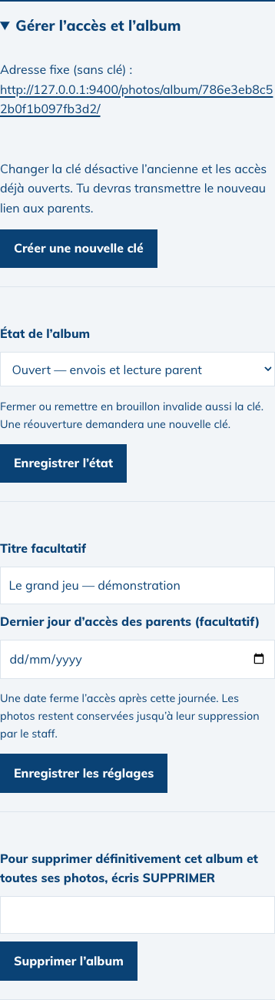

COMPLÉMENT 3.3 · STAFF D’UNITÉ
Donner accès aux
photos du camp
Une clé par album : une section, une année. Plusieurs animateurs peuvent compléter le même album.

- Ouvre l’album puis Gérer l’accès et l’album.
- Choisis Ouvert, puis Enregistrer l’état.
- Créer une nouvelle clé, puis Copier le message pour les parents. Le lien et son QR ne sont montrés qu’une fois.
- Colle le message dans le groupe des familles. Garde ce message pour retrouver le lien.